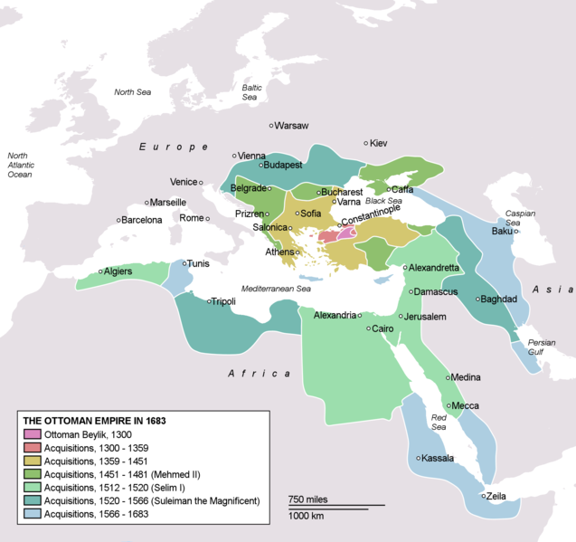
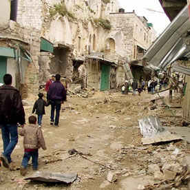

Literary Interpretation
Welcome to the special honors section of WMU English Department's first course in literary study! This section of Literary Interpretation will offer a unique, "experimental" focus on literature about and from the Middle East while, at the same time, meeting the catalog description and course objectives.
The United States is still reeling from the terrorist attack of September 11, 2001, is engaged in protracted wars in Iraq and Afganistan, and extensive political engagement in the region, especially Israel, Palestine, and Egypt. Our country has a long history of involvement in the Middle East that has important consequences for our country, the region, and the entire world.
The course will be divided into two primary sections. First will be a focus on the portrayal or respresentation of the Middle East in texts and cultural artifacts that have become canonical in the West especially before 9/11, but also afterward. Second, and in response to these works, we will engage in reading of modern works in translation by Middle Eastern writers. While many works will be read in common, there will also be independent and group-based reading assignments. Given the experimental nature of this class, the current syllabus is only provisional and will evolve with the course.
Reading literature about and from this region will provide an exciting opportunity to increase cultural, political, and historical knowledge, while, at the same time, satisfying the goals of developing the ability to read and write about literature. We will apply tools of close reading to additional cultural texts, including young adult texts, images, graphic novels, film, the internet, and so on as we engage in close reading and critical viewing. We will read texts and hear speakers from a variety of points of view, with an emphasis on those points of view that are less often heard in the United States.
One focus will be on the Palestinian crisis -- at the center of conflict in the Middle East. As background for our literary reading, we will read former President Carter's new book on the Israel/ Palestinian conflict. Differences of opinion will be respected and explored as we seek a deeper understanding of the literature and issues involved.
Students will frequently take on mini-research projects and presentations related to the literature and themes explored in the class.
Perhaps it is obvious that it is important to increase American understanding of the Middle East. The work that we do in this experimental course will become the basis for publications that I hope will appear in widely read professional journals for teachers.
Our on-line syllabus serves as an electronic, hyperlinked, textbook. All students will develop and publish their own academic blogs and these websites will be interlinked, interactive, and woven into course discussion and writing. Our section is held in a special wireless, laptop classroom 1354 Ellsworth Hall that will accomodate a number of experiments using the internet and other technologies to enhance course materials and work.
Because the course is held as a seminar, your participation is vital to the learning of your classmates. Attendance will be taken and missing classes will lower your grade. Missing more than four classes may lead to failing. This course will follow WMU policies regarding academic honesty.
WMU has many resources to foster student health and well being. I support the Safe on Campus environment (387-2123). If at any point in the semester if you feel stress, English 4800 does offer free on-line therapy from Eliza!
My office is 723 Sprau Tower, 387-2605. Office hours are immediately after class and by appointment. You can always reach me via email.

Extensive reading from digital archives and the internet.
WMU Bookstore $5.00 Fee Card to cover expense of xerox packets of poetry, short stories, etc.
Men in the Sun by Ghassan Kanafani
Wild Thorns by Sahar Khalifeh
Palestine: Peace Not Apartheid by Jimmy Carter
Additional contemporary novels selected by the student from list to be read in literature circles:
Woman at Point Zero, The Day the Leader Was Killed, The White Castle, Dreams of Tresspass, Persepolis I & II, Under the Persimmon Tree, Habbi, etc.
The MLA Handbook for Writers of Research Papers, also available at The OWL at Purdue
Bedford Glossary of Literary Terms, also available at Bedford/St. Martin website
Major Assignments
 |
Blog Assignments / Participation (20%) Paper 1: Representations of Moors / Orient, close reading of texts, 5 page minimum. Due: Oct 1 (20%) Paper 2: Contemporary Palestinian Literature, 5 page minimum. Due: Oct 29 (20%) Paper 3: Contemporary Middle East Novel, 5 page miminum. Due: Nov. 26 (20%) Paper 4: Contemporary Middle East Novel, 5 page miminum. Due: Dec 10 (20%)
|
Sep 5 Wednesday: Introductions
In class:
1. Examine Dr. Webb's blog: Oriental-Interpretations.blogspot.com
2. Create your own blog at Blogger.com. Send URL to Dr. Webb.
Sep 10 Monday: Early Representations
Before class:
1. Background reading: "Saladin" in Wikipedia
2. Boccaccio's Decameron (1350), 10th Day, Ninth Story (Decameron Web, Brown University)
3. Chaucer's Canterbury Tales (1400) from "Man of Lawes Tale" (Lawyer's Tale) ll. 1-380 (Electronic Literature Foundation has versions in Middle English and Modern Translation)
4. Write your blog: websites addressing the Middle East before 1400AD (eg. crusades, Mohamed, Arab civilization, etc.) and comments on reading
Sep 12 Wednesday: Othello
1. Read: Shakespeare's Othello (1603), Act I-III, MIT On-Line Version
2. Blog: On Othello, the Moor, and related websites.
Sep 17 Monday: Shakespeare and Representations of Middle East
1. Read: Finish Othello, and read "Turning Turk in Othello: The Conversion and Damnation of the Moor" by Daniel Vitkus (Shakespeare Quarterly)
2. Blog: Comment on the conclusion of the play and issues of representation from Vitkus.
Sep 19 Wednesday: 1001 Nights
1. Read: Background, Wikipedia on 1001 Nights, "History and Literary Significance of 1001 Nights," by Daniel Beaumont
2. The Thousand Nights and a Night translated in 1885 by Richard Burton at the Etext Library, 1001 Nights Bartleby Lane Translation Read "Story of King Hahryar and His Brother" and two additional stories.
3. Blog: Comment on the 1001 Nights.

Sep 24 Monday 1001 Nights Continued
1. Read: Several additional tales from 1001 Nights
2. Blog: Comment on the 1001 Nights and/or share your paper ideas. You might compare and contrast with previous reading from Shakespeare, Chaucer, and Boccaccio.
3. Paper 1 Rough Draft Due, minimum 3 pages
Sep 26 Wednesday Rubaiyat and Sufi Poetry
1. Read: Rubaiyat of Omar Khayyam Elf Version with Dulac / Pogany Illustrations, Learn about Rumi's life and read Rumi Poetry. "Ozymandias" by Shelly (You may enjoy the movie version!), "Kubla Khan" by Coleridge.
2. Blog: Write 3-4 of your own four-line verses in the style of the Rubaiyat.

Oct 1 Monday History of Modern Middle East
1. Due: Paper 1
2. Read: "Orientalism" from Wikipedia (references to Edward Said are especially important). Read: "History of the Middle East" paying particular attention to European Domination section. Other relevant websites: "The Middle East," "Ottoman Empire," "Ottoman Dominated Countries," "British Mandate of Mesopotamia," Middle East Map, British Empire,
3. Blog: Respond to one or more website on the history of modern Middle East.
{kind=link}
Oct 3 Wednesday Islam and the Koran, Mosque Visit
|
Oct 8 Monday Exile: Men in the Sun by Ghassan Kanafani, visit from Dr. Mustafa Mughazy (Egypt)
1. Read: Men in the Sun
2. Blog: Respond to the story.
Oct 10 Wednesday Palestinian Short Stories
1. Read: stories from Men in the Sun and "Stealing Away, We Returned" by Rasmi Abu Ali, and "Norma and the Snowman" by Yehia Yakhalf
2. Blog: Respond to the stories.
Oct 15 Monday Life Under Occupation I
Oct 17 Wednesday Life Under Occupation II
|
 |
Oct 22 Monday Palestine Solutions?
1. Read: Palestine: Peace Not Apartheid by Jimmy Carter
2. Blog: What have you learned about the Arab / Israeli conflict?
Oct 24 Wednesday Israel and American Foreign Policy Speaker: Dr. Mike Jayne
1. Read:
"The Israel Lobby" by Mearsheimer and Walt from the London Review of Books (23-3-06)
Response by Harvard Law Professor Alan Dershowitz
Additional Perspectives on "The Israel Lobby:"
A series of videos by American Free Press.net.
McNeil News Hour Debate
2. Blog: Your response to the debate.
Oct 29 Monday 9/11 and Iraq War: Terrorism and Portrayal of the Middle East, Speaker Dr. Ron Cramer (anti-war activist)
1. Read: Wikipedia article on the Iraq War
2. Blog: To be determined.
3. Paper 2 due
Oct 31 Wednesday Iraq War: American Soldier Poetry & Blogs
|
 |
Nov 5 Monday Literature Circles
1. Read: Book Selected in Literature Circles
2. Blog: Address your book
Nov 7 Wednesday
Nov 12 Monday
|
Nov 14 Wednesday Visitor: Ingie Zakaria (Egypt)
1. Read: Book Selected in Literature Circles
2. Blog: Address your book
Nov 19 Monday Visitor: Dr. Joe Ellen (Israel), American Soldiers from Iraq
1. Read: Book Selected in Literature Circles
2. Blog: Address your book
Nov 21 Wednesday NO CLASS, THANKSGIVING RECESS
Nov 26 Monday
1. Read: Book Selected in Literature Circles
2. Blog: Respond to the visiting speakers
3. Paper 3 Due
Nov 28 Wednesday Speaker: Dr. Mustafa Mizeler (Turkey)
1. Read: Book Selected in Literature Circles
2. Blog: Find information on Turkey and respond.
Dec 3 Monday Speaker: Zaydun Al-Shara (Jordan) Images of Jordan
1. Read: Your own book.
2. Blog: On your independent reading
Dec 5 Wednesday Speaker: Jahan Aghdai (Iran)
1. Read: Finish your own book.
Dec 10-14: Finals Week
Dec 13 Thursday 8:00 -10:00 Scheduled Final Exam
1. Paper 4 Due
2. Class Evaluation
3. Final Exam
------------------------
Resources:
Banipal: Magazine of Modern Arab Literature
Related Courses:
English 204 World Literature in Translation by Tom Gage at Humbolt State University